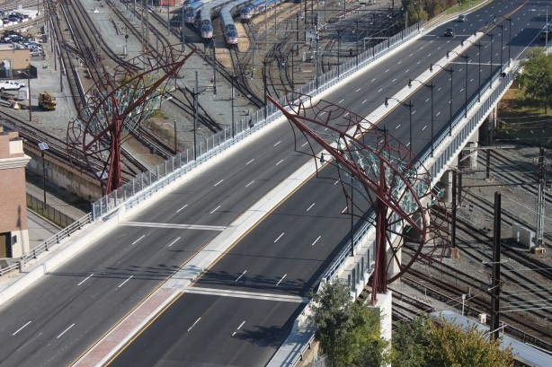
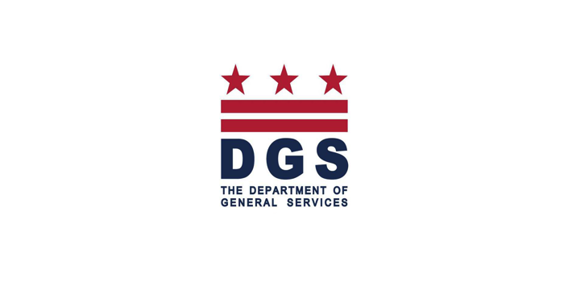
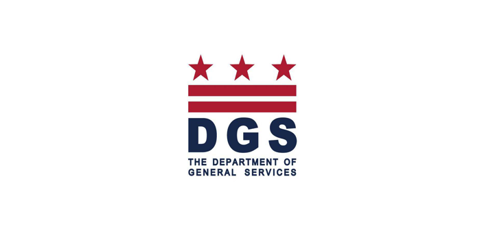

Founded in 1995, J-Dos Internationalé has a proven track record of providing excellent strategic project management services at the Federal, State and Local levels.
Featured Projects
Each project has a unique story, and with innovative project management, leadership, and quality of service, we are able to complete and deliver projects that illuminate the area.
Local - Citywide Pavement Restoration Project

Project Summary
The FY 2014-16 local alleyway restoration project consisted of pavement restoration citywide. The project commenced in 2014 as alleyway restoration citywide FY 2015 became part of the Mayor’s Alley Palooza program. Work under this contract included inspection and conditional assessment of the existing alleyways, PCC and asphalt pavements, adjustment of sewer-water manhole frames and basin tops, construction of wheelchair/bicycle ramps, and grading and excavating as required.
The FY 2014-16 local alleyway restoration project consisted of pavement restoration citywide. The project commenced in 2014 as alleyway restoration citywide FY 2015 became part of the Mayor’s Alley Palooza program. Work under this contract included inspection and conditional assessment of the existing alleyways, PCC and asphalt pavements, adjustment of sewer-water manhole frames and basin tops, construction of wheelchair/bicycle ramps, and grading and excavating as required.
New York Avenue, NE Bridge project

Project Summary
The primary goals of rehabilitation of the New York Avenue, NE Bridge project were to enhance pedestrian and vehicular safety and to reduce traffic congestion. Upgrades and repairs to the bridge included upgrading existing bridge superstructure and Amtrak electrical infrastructure, repair of bridge piers and abutments, adding new steel plate girders, replacing existing concrete deck, and improving approach roadways, pedestrian sidewalks, and roadway lighting features.
The project involves the demolition and reconstruction of the New York Avenue Bridge and approach roadways between Florida Avenue and 9th Street N.E. and relocation of the catenary support system in the rail yard. Rehabilitation work consists of the demolition, removal, and reconstruction of the bridge superstructure and piers between the existing abutments, widening of the existing abutments, construction of a new sidewalk historic bridge rail, and associated improvements to the approach roadways and adjacent sidewalk areas.

J-Dos Role
As a member of the construction management team charged with overseeing the rehabilitation of the bridge, J-Dos provided services in three primary areas: Office Engineering, Scheduling and Construction Inspection.
The tasks involved with executing work in these areas included:
Office Engineering
- Managed on site coordination, logistics reviews, permits and warranties
- ensured compliance with labor and safety regulations
- reviewed and processed contractors’ vouchers and payments, requests for information(RFIs) and miscellaneous sketches, and as built drawings
- provided change order analyses and offered recommendations and follow-up to ensure quality compliance of workmanship and materials with contractual provisions
Scheduling
- Developed and submitted construction schedule using Primavera scheduling software
- converted contractor’s baseline schedule from Microsoft Projects to Primavera
- reviewed schedule
- prepared comments for and met with DDOT and the contractor to address
- resolve outstanding issues
Construction Inspection
- performed daily inspections and prepared daily logs regarding material and labor, work progress, defects and rejections and a detailed record of the contractor’s performance
- reviewed and coordinated all work with respect to impacts on CSX Railroad operations
16th St NW Bridge Replacement
Project Summary
The Replacement of 16th Street NW Bridge over Military Road NW was a design/build fast-tracked bridge construction project. J-Dos provided Construction Inspection and Community Outreach services. This was a signature project for pre-engineered structures and traffic management in Washington, DC.

Fast Track Project
The District Department of Transportation (DDOT) required that the project be fast tracked, with minimal disruption to the daily traffic flows. Prefabricated structural members were used for speed of construction. The project also required that creative traffic controls be executed to minimize the disruptive impact on the heavily travelled 16thStreet corridor.
The J-Dos team worked closely with all stakeholders, which included the Ward Council representative, churches, Advisory Neighborhood Commissions (ANC), residents, and businesses impacted by the reconstruction to ensure transparent communications between DDOT’s representatives and the affected community; Employed a variety of community engagement practices to relay the important information to neighbors, business owners and other stake holders (including: door to door canvassing, the development and maintenance of a project web site, mailers, participating in discussion forums, and DC print outlets).
J-Dos was also responsible for daily inspections of construction work and maintenance of traffic; prepared daily logs regarding materials, labor, work progress, defects and rejections, this also included detailed records of contractor performances; Documented receipt of material certification as required by the design specifications to ensure compliance with all standards and codes and; confirmed that all materials were approved and/ or certified by the QA/QC Division.
Customers & Partners


 
